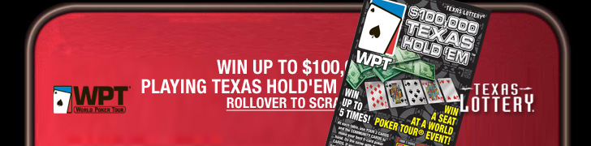
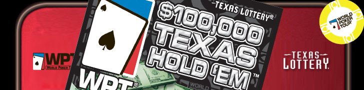
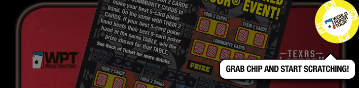
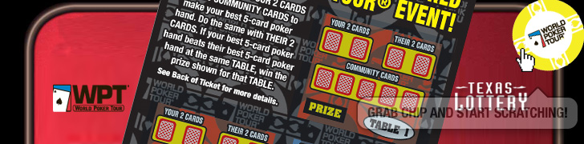
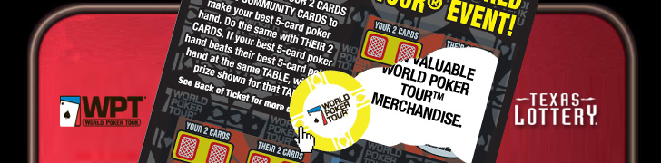
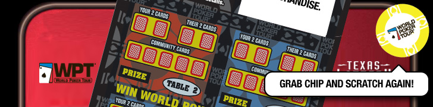
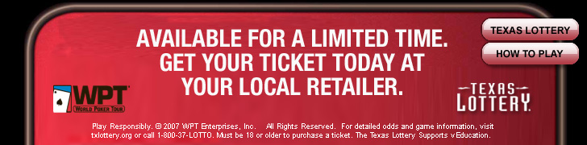

| First frame with rollover callout text, elements animate in... |
|  |
| As user rollovers the elements will move down as the scratch off card slides in, wiping out first copy. |
|  |
| Scratch card will now zoom up so user can see the WPT logo and "$100,000 TEXAS HOLD'EM" Poker chip comes into frame in top right. |
|  |
| Poker chip will highlight as the background darkens and popup bubble apears to signal the user to start interacting with the ad unit. |
|  |
| As the user grabs the chip, the background will brighten again and the text bubble goes away. |
|  |
| Card will slide up so user will see the scratch off area. (To make this easy the scratch area will automatically come off in the correct area no matter where the user scratches) Copy below is revealed. |
|  |
| After copy is fully revealed the chip will automatically move back to the top right and new bubble text copy comes up: "Grab chip and scratch again!" User will repeat to reveal the rest of the copy. a. Win valuable World Poker Tour merchandise b. Win a seat at a World Poker Tour tournament c. Win up to 5 times per ticket |
|  |
| After the final copy on the scratch has been revealed, the chip and card will animate out as the final copy and CTA animate in. Buttons for the Texas Lottery website and How to Play will fade in. Legal also comes in on last frame. *note any rollout will colaspe the ad unit and reset the flash movie. |